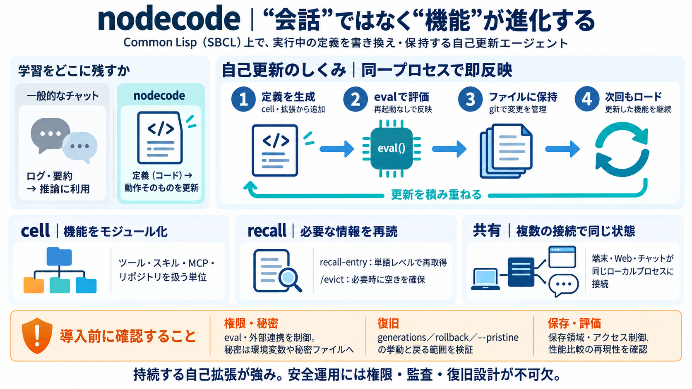

Model Context Protocol for Enterprise: 2026 Deployment Guide
### Measurable Business Impact Early enterprise MCP deployments report substantial operational gains. Block achieved a …

### Measurable Business Impact Early enterprise MCP deployments report substantial operational gains. Block achieved a …
ARC-AGI-3 is a natural testbed for this approach. Unlike static puzzle benchmarks, ARC-AGI-3 places agents in novel, abs…
List results — the responses from `tools/list`, `resources/list`, and `prompts/list` endpoints — are now cacheable. In e…
``` [...] ``` [...] ARISING FROM, OUT OF OR IN CONNECTION WITH THE SOFTWARE OR THE USE OR OTHER DEALINGS IN THE SOFTWARE…
## MCP Maturity Model for Retail (2026) Identify where your retail organization is today, and drive deeper adoption of …